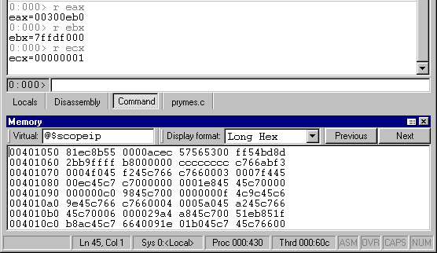

To tab a floating or docked window, drag it on top of another docked window. Drag the window with the mouse pointer over the center of an already-docked window, and then release the mouse button. The dragged window joins the already-docked window as a tabbed window collection.
All Source windows can be grouped automatically into a tabbed collection by selecting one Source window and designating it as the tab-dock target for all Source windows by choosing the Set as tab-dock target for window type option in its short-cut menu. Once this is done, all future Source windows that are opened will automatically be included in a tabbed collection with this first Source window. The Source window marked as the tab-dock target will not be closed when the Window | Close All Source Windows menu command is selected. Thus you can set up a placeholder window for the Source windows without worrying that it will be closed when you don't want it to be. The same process also works for Memory windows.
A set of tabs always controls the window immediately above the tabs. In the following illustration, the Debugger Command window is selected and is visible above the tabs.
